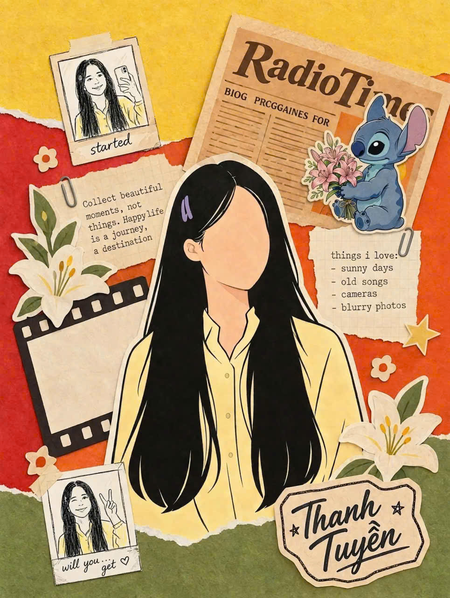

một góc nhỏ dành cho chúng tamột điều nhỏ muốn nói
Gặp em,
rừng cũng dịu dàng hơn.
Có những người bước vào đời ta thật khẽ,
nhưng để lại cả một mùa xanh.

một góc nhỏ dành cho chúng tamột điều nhỏ muốn nói
Có những người bước vào đời ta thật khẽ,
nhưng để lại cả một mùa xanh.